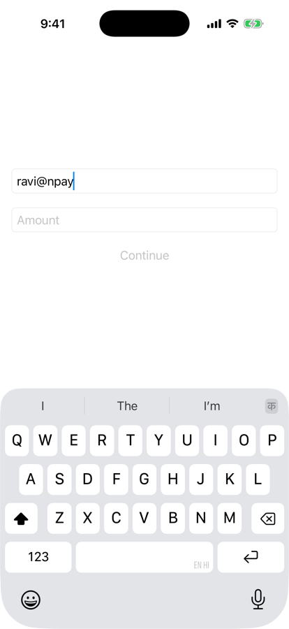
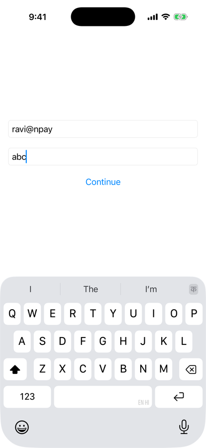
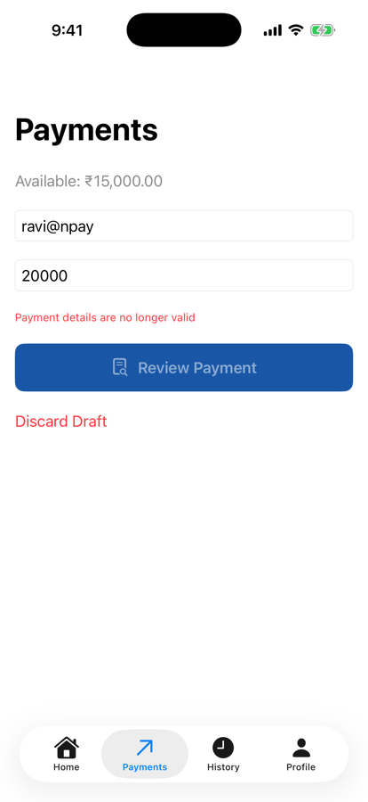
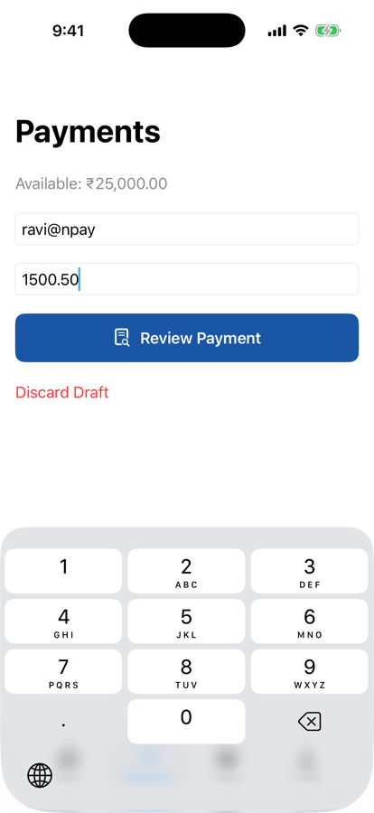

Unit 04 · Lesson 4.2
Move the payment screen’s state and behaviour into a ViewModel, and watch how SwiftUI keeps it alive.
Lesson 4.2 · Outcomes
Say what belongs in a ViewModel, and what doesn’t
Make a ViewModel observable and bind to it
Inject the shared store; never create a second one
Prepare, review and confirm in two stages
Explain ViewModel lifetime under @State
Avoid reference cycles in ViewModels
Lesson 4.2 · Where we are
Unit 04 · Application Architecture & MVVM
Part 1
The screen is doing too much
Part 1 · Our engineering problem (section 1)
| PaymentsScreen | 3.12 | After this lesson |
|---|---|---|
| Lines | 160 | 120 (+ ViewModel 117) |
| State properties | 6 | 4 (focus, sheet, success, discard) |
| Uses of the store | 14 | 0 |
Counted in our code before and after the refactoring.
Part 1 · What exactly is a ViewModel? (section 2)
viewModel.recipient viewModel.amountText viewModel.isValid viewModel.errorMessage viewModel.submitPayment()
| PaymentsScreen | PaymentViewModel |
|---|---|
| TextField layout | Editable payment data |
| Buttons and colours | Validation state |
| Review sheet presentation | Preparing payment requests |
| Keyboard focus | Submission coordination |
| Navigation presentation | Payment result |
| Accessibility labels | User-facing error state |
Part 2
Plain Swift, then observable
Part 2 · A ViewModel without SwiftUI (section 3)
import Foundation
@MainActor
final class PaymentViewModel {
var recipient = ""
var amountText = ""
var isValid: Bool {
!recipient.isEmpty && !amountText.isEmpty
}
}Part 2 · How will SwiftUI observe changes? (section 4)
import SwiftUI
@MainActor
@Observable
final class PaymentViewModel {
var recipient = ""
var amountText = ""
var isValid: Bool {
!recipient.isEmpty && !amountText.isEmpty
}
}Part 3
@State owns it; @Bindable binds to it
Part 3 · Connect PaymentViewModel to SwiftUI (section 5)
struct PaymentMVVMLab: View {
@State private var viewModel = PaymentViewModel()
var body: some View {
@Bindable var viewModel = viewModel
VStack(spacing: 20) {
TextField("Recipient",
text: $viewModel.recipient)
.textFieldStyle(.roundedBorder)
TextField("Amount",
text: $viewModel.amountText)
.textFieldStyle(.roundedBorder)
Button("Continue") {
print("Payment requested")
}
.disabled(!viewModel.isValid)
}
.padding()
}
}
Recipient only

Amount “abc”
start: Continue disabled
recipient only: disabled
+ amount "1": enabled
amount cleared: disabled
amount "abc": enabled
tap: Payment requested
Part 3 · TextField to ViewModel (sections 5–6) · conceptual
Stage 6 is the text’s; stages 1–5 are ours, from section 5’s list (only the last stage of the text’s stepper was shared).
Part 4
Validator rules; the shared store
Part 4 · Introduce proper payment validation (section 7)
var parsedAmountPaise: Int? {
Money.parsePaise(amountText)
}
func validate(
availableBalancePaise: Int
) -> Bool {
guard let amount = parsedAmountPaise else {
return false
}
do {
try PaymentValidator().validate(
recipient: recipient,
amountPaise: amount,
balancePaise: availableBalancePaise
)
return true
} catch {
return false
}
}| recipient | amount | isValid | validate(₹25,000) |
|---|---|---|---|
| ravi@npay | 1500.50 | true | true |
| ravi@npay | abc | true | false |
| 100 | true | false | |
| ravi@npay | 30000 | true | false |
| ravi@npay | 0 | true | false |
| false | false |
Both run in the simulator, same inputs.
Part 4 · How does the ViewModel reach NPayStore? (section 8)
@MainActor
@Observable
final class PaymentViewModel {
var recipient = ""
var amountText = ""
var errorMessage: String?
private let store: NPayStore
init(store: NPayStore) {
self.store = store
}
}private let store = NPayStore()
its own store: 2,349,950 paise
NPay’s store: 2,500,000, 3 transactions
Home: ₹25,000.00
Home: ₹23,499.50
Part 5
Prepare for review; confirm to pay
Part 5 · Build the payment submission method (section 9)
func submitPayment() -> UUID? {
guard let amount = Money.parsePaise(amountText) else {
errorMessage = "Invalid amount"
return nil
}
do {
try PaymentValidator().validate(
recipient: recipient, amountPaise: amount,
balancePaise: store.balancePaise)
} catch {
errorMessage = "Payment validation failed"
return nil
}
guard let transactionID = store.recordDemoPayment(
recipient: recipient, amountPaise: amount) else {
errorMessage = "Unable to record payment"
return nil
}
recipient = ""; amountText = ""; errorMessage = nil
return transactionID
}Part 5 · Two stages: prepare, then confirm (sections 11–12)
struct ValidatedPaymentRequest: Identifiable {
let id = UUID()
let recipient: String
let amountPaise: Int
}
func preparePayment() -> ValidatedPaymentRequest?
// parse + validate; set errorMessage or
// return an immutable request for review
func confirmPayment(
_ request: ValidatedPaymentRequest
) -> UUID?
// validate again against the current balance,
// record, clear the form, return the IDPart 5 · Why validate twice? Measured (section 12)

After Confirm
prepare ₹20,000 → review sheet: ravi@npay
meanwhile ₹10,000 leaves → balance 1,500,000 paise
Confirm → balance still 1,500,000, sheet closed
screen: “Payment details are no longer valid”
Part 6
Who creates it, who keeps it
Part 6 · Who owns the ViewModel? (section 10)
struct PaymentsFeatureRoot: View {
@State private var viewModel: PaymentViewModel
init(store: NPayStore) {
_viewModel = State(
initialValue: PaymentViewModel(store: store)
)
}
var body: some View {
PaymentsScreen(viewModel: viewModel)
}
}PaymentsFeatureRoot(store:router:)Part 6 · ViewModel versus store (section 13)
| PaymentViewModel | NPayStore |
|---|---|
| Owns payment form state | Owns demo account state |
| Exposes validation feedback | Owns the transaction collection |
| Prepares review requests | Records demo payments |
| Coordinates submission | Updates the balance |
| Screen / feature lifetime | Application-root lifetime |
paymentDraft left NPayStorePart 6 · ViewModel identity, measured (sections 14, 17)
init(store: NPayStore) {
self.store = store
print("PaymentViewModel initialized")
}six tab switches: initializer ran 7 times
typed “ra”, left, came back: 9 times
draft after all of it: recipient “ra”
live instances: 1 kept (+1 briefly)
each extra one: “PaymentViewModel deinitialized”
PaymentViewModel(store:) is evaluated whenever the parent view value is builtPart 6 · Debugging Observation (section 15)
let _ = Self._printChanges()
PaymentsScreen: \PaymentViewModel.recipient changed.
PaymentsScreen: \PaymentViewModel.recipient changed.
recipientPart 6 · Who creates it, who retains it (sections 17–18)
Lifetime follows the owning storage, not the number of body runs.
| Older observation | Modern Observation (iOS 17+) |
|---|---|
| ObservableObject | @Observable |
| @Published | Observable stored properties |
| @StateObject | @State for owned models |
| @ObservedObject | Plain references; @Bindable for bindings |
| @EnvironmentObject | @Environment(Model.self) |
Common correspondences, not exact one-to-one replacements.
Part 7
Derive, report, return
Part 7 · Derived state (sections 19–20)
// Stored: must be kept in sync
var recipient = ""
var amountText = ""
var isValid = false
// Derived: always current
var isValid: Bool {
!recipient.isEmpty && !amountText.isEmpty
}Part 7 · Errors and navigation (sections 21–22)
// PaymentViewModel
var errorMessage: String?
// PaymentsScreen
if let errorMessage = viewModel.errorMessage {
Text(errorMessage)
.font(.caption)
.foregroundStyle(.red)
}if let transactionID =
viewModel.confirmPayment(request) {
router.showPaymentSuccess(transactionID)
}Part 8
ARC still applies; the app still works
Part 8 · What happens when the screen disappears? (section 23)
deinit {
print("PaymentViewModel deinitialized")
}the draft-holding ViewModel: never deinitialized
(only the discarded extra instances were)
if removes PaymentsFeatureRootopen: live 1
close: PaymentViewModel deinitialized → live 0
reopen: a new instance (initializer #2)
Part 8 · Avoiding reference cycles (section 24)
viewModel.callback = {
viewModel.performAction()
}
viewModel.callback = { [weak viewModel] in
viewModel?.performAction()
}strong: initialized
strong: performAction
after strongCapture() ← no deinit
weak: initialized
weak: performAction
weak: deinitialized
after weakCapture()
Part 8 · Complete payment architecture (sections 16, 25)
Conceptual. The view calls the router after the ViewModel reports success; the router isn’t a store dependency.
draft kept across tabs: ravi@npay, 1500.50
Confirm: 2,349,950 paise, 4 transactions
router: paymentsPath 1 route, Payment Recorded
Home ₹23,499.50 · History top: Sent to ravi@npay
form after success: empty

Payments, with a ViewModel
Lesson 4.2 · Recap
ViewModel = a screen’s state and behaviour
the view keeps layout, focus, presentation
Inject the shared store; return results
no second store; the router navigates
Lifetime follows the owner
initializer ran 9 times; one instance kept the draft
Review
Check your understanding · 1 of 9
Does SwiftUI recreate the ViewModel every time body executes?
Body ran on every keystroke; the same instance kept the draft.
Common trap: Equating body runs with object lifetime.
Check your understanding · 2 of 9
What is the purpose of @Bindable?
$viewModel.recipient for a TextField.
Common trap: Expecting @State to provide bindings to an object passed in.
Check your understanding · 3 of 9
Why prefer computed validation over duplicated stored flags?
A computed isValid is always current.
Common trap: Storing derived state by habit.
Check your understanding · 4 of 9
Should the ViewModel directly construct SwiftUI alert views?
It exposes errorMessage; the view chooses how to show it.
Common trap: Putting view modifiers in the ViewModel.
Check your understanding · 5 of 9
Does @MainActor guarantee that expensive synchronous code won’t block the UI?
It runs on the main actor: 0 frames during heavy work (3.11).
Common trap: Reading isolation as speed.
Check your understanding · 6 of 9
Can a ViewModel class participate in ARC reference cycles?
Strong self-capture: no deinit in our run.
Common trap: Thinking SwiftUI manages object memory.
Check your understanding · 7 of 9
A ViewModel declares private let store = NPayStore() and records a ₹1,500.50 payment. What does Home show?
The payment went to a second store nobody else reads.
Common trap: Creating dependencies instead of injecting them.
Check your understanding · 8 of 9
NPay’s Payments tab owns its ViewModel with _viewModel = State(initialValue: PaymentViewModel(store:)). After six tab switches, the draft is…
7 initializer runs; @State kept the original instance.
Common trap: Using init logs as proof of lifetime.
Check your understanding · 9 of 9
From Lesson 4.1: what does PaymentValidator depend on?
That’s why five tests ran without an app.
Common trap: Letting rules import the UI.
Lesson 4.2 · Where this goes next
| Lesson | Topic | Builds on today |
|---|---|---|
| 4.3 | Observation framework internals | how @Observable tracks the reads we saw today |
| 4.4 | Dependency injection | the store passed in today, generalized |
| 4.6 | Use cases | SendPaymentUseCase takes over from the store |
| 4.7 | UI state modeling | structured errors instead of a String |
Lesson 4.2 · Lab
Move the screen’s state into a ViewModel.
Lesson 4.2 complete
Next: Lesson 4.3 — Observation Framework Internals